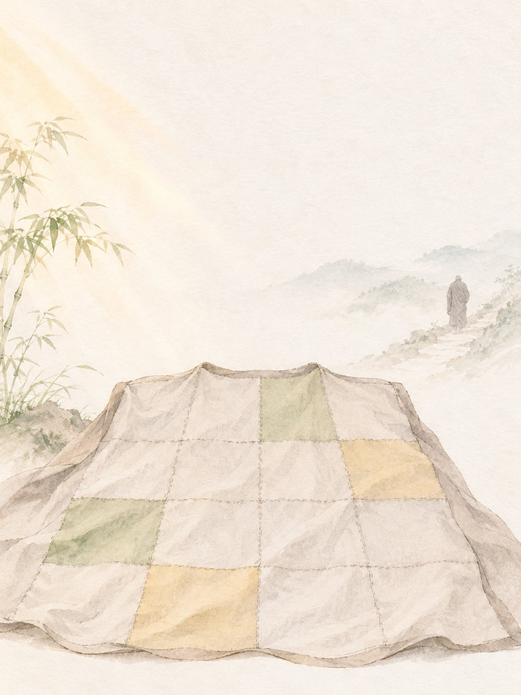
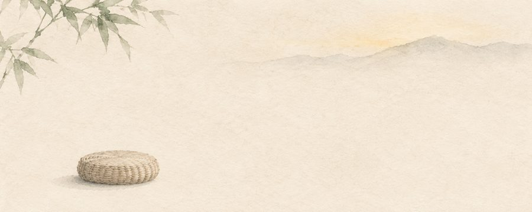
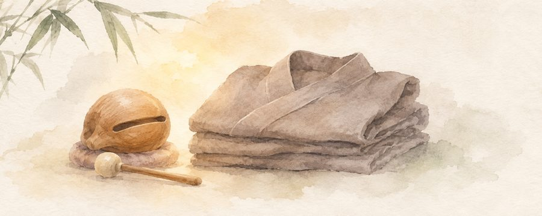
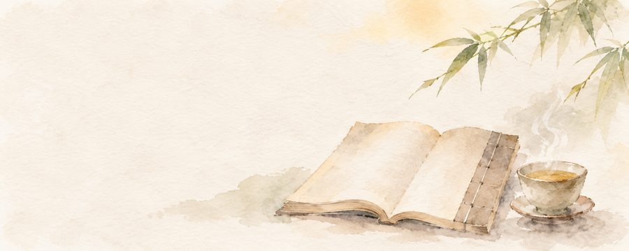

事事當願眾生善用其心（八十華嚴）、當願眾生 出自《華嚴經・淨行品》
第一次來：先到〈功課〉試一天；記錄都收在〈出家簿〉。
今日一卡
設計說明
首頁的底色與「此刻一願」會隨一天的時間改變：清晨、用餐、夜晚各取淨行品中對應的一願，其餘時段每天換一願。
淨行品
《大方廣佛華嚴經・淨行品》：六十華嚴 140 願，八十華嚴 141 願。
資料與分法說明
六十華嚴為 T09n0278 卷6〈淨行品第七〉，八十華嚴為 T10n0279 卷14〈淨行品第十一〉。經文逐字取自 CBETA 大正藏底本，並經兩次逐字比對。
十段的分法是本工具為方便閱讀所做，不是經文原有的分品；行腳段兩版偈數不同（六十 57、八十 58），因此並排時不強行逐條對齊。
自造淨行偈
照〈淨行品〉的句子，為今天遇到的一件事寫一首：遇到什麼境，就起什麼願。法鼓山僧伽大學的學僧也這樣替自己的一日生活造偈，連昏沉、妄念、遲到都寫進去。記得是「當願眾生」，不是「願我」：把自己的境，轉成為眾生的願。
示範與心得：僧大〈在生活中善用其心〉（例句出自此文）。只存在這台裝置。
遇境查願
《淨行品》教人：遇到什麼境，就起什麼願。點一個你此刻遇到的情境，看經文怎麼說。（情境的白話標題是本工具為方便查找所擬，願文取自六十華嚴原文，各附願號。）
聖嚴法師說，隨時隨地舉心動念是為眾生得安樂，不為自己求利益（〈發大悲願心〉）。默念一遍，再回到手上的事。
今日功課
淨行品的精神：日常的每一個動作，都起一個願。這是本工具的用法。
聖嚴法師說，隨時隨地舉心動念是為眾生得安樂，不為自己求利益（〈發大悲願心〉）。下面把一天分成四段：晨起發願、日中隨境起願、禪坐、夜裡回顧迴向。不必全做，做得到哪段就從哪段開始。

晨・起一願
發願是一種生活態度，也是生命的方向（聖嚴法師〈發願，找到生命的方向〉）。起床時，先念這一願：
今天我想在哪件事上守住這個願？（選填）
日中・隨境起願
《淨行品》的修法，是遇到什麼境，就起什麼願。今天有五個境，做到的時候默念一遍，想起了就勾。（取六十華嚴，每願附偈號）
吃飯這一境：食存五觀
一、計功多少，量彼來處
二、忖己德行，全缺應供
三、防心離過，貪等為宗
四、正事良藥，為療形枯
五、為成道業，方受此食
出處：源出道宣《四分律刪繁補闕行事鈔》，此依《毗尼日用切要香乳記》。原是寺院用齋時的五種觀想，在家吃飯一樣用得上。這一餐，我有收攝身心嗎？想起五觀，安安靜靜地吃，就是收攝。
不打分數。「中途想起」是給吃到一半才想起的人：能想起，就是覺察的開始。
忙的時候，可以停下來放鬆身心，注意呼吸從鼻孔出入的感覺，沒多久就能心平氣和（聖嚴法師，禪修與緊張的現代生活）。

坐・禪坐
打坐的基本要領，是先放鬆身心，才能放下身心（聖嚴法師〈禪坐有什麼功能？〉）。坐姿與方法請依法鼓山的禪修課程學習；這裡只提供計時與提示。
計時只是輔助，不是目標；坐多久都好，中途停止也會照實記下。初學者建議 5 到 15 分。計時時請保持畫面開啟。若出現身心不適或特殊反應，請停止，並請教法鼓山禪修老師。
福慧雙修
聖嚴師父說：「有福的人一定要有智慧，有了智慧，才知道如何運用福報和增長福報。」（〈福慧雙修〉）修福，轉在家人顯著的業障；修慧，轉煩惱障。各勾一項就好。
師父說：「種福田不在於錢多錢少……凡是能給人方便、給人無畏、給人安慰，都是在種福田。」（〈如何種植福田〉）
師父說，智慧的產生分成聞、思、修、證，「首先要聽聞佛法及修行的方法，以正知正見作為指導」。（〈照見五蘊皆空〉）
福德與功德
做好事是修福；不為自己求名利、只想幫助人時，煩惱自然減少，就連帶修了慧。師父說：「『慧』的意思是煩惱減少」，為了奉獻而做事，「自然就會煩惱減少」（〈承認是凡夫努力修福修慧〉）。又說，以還願和許願的心主動付出，是「功德的我」（《找回自己》）。所以同一件善事，帶著利他的心去做，再迴向給眾生，福德就成為功德。

夜・回顧與迴向
睡前先想一件今天值得感恩或隨喜的事。再回顧身口意，勾一項今天留意到的善就好（《十善業道經》），不必每項都勾。
今天哪個境讓我起了煩惱？我怎麼面對它、接受它、處理它、放下它？（聖嚴師父「四它」）
今天有哪裡不妥？記一句，當下立願改過，明天重來。
每天針對一日言行反省，有不妥就當下立願改過，並修四正勤：已生惡令斷滅，未生惡令不生，未生善令生起，已生善令增長（香光莊嚴〈日常生活也能「大悲懺」〉）。
眾生無邊誓願度
煩惱無盡誓願斷
法門無量誓願學
佛道無上誓願成
迴向文與課誦，請依法鼓山課誦本。

一日齋戒
八關齋戒：在家人一日一夜的清淨生活。
八關齋戒是佛陀為在家眾開的方便法門，讓在家眾學習出家生活（南天寺《八關齋戒》）。須從法師或如法道場受持；本頁不能代替受戒，只幫你安排與記下這一天。
這一天的作息
時間軸是本工具的參考安排，不是經典規定，請以所受道場的安排為準。目前所在的時段會淡淡標出。
八戒一齋
依《薩婆多論》（見南天寺《八關齋戒》）：前八項為戒，第九項為齋，合稱「八戒一齋」。
六齋日與出處
六齋日：農曆每月初八、十四、十五、廿三、廿九、三十（小月無三十，以廿八、廿九計）。八關齋戒也可在其他日子受持（法增比丘《八關齋戒的受持與功德》）。
八關齋戒的前五支即五戒，但第三支改為「不淫」：夫妻之間也不行（南天寺《八關齋戒》）。

讀誦
閱讀設定
深入閱讀
讀完經文，再聽聽聖嚴師父怎麼把佛法用進生活。以下錄自法鼓山僧伽大學《九十二學年度年報》師長開示；原是對學僧說的，在家人讀一樣受用。
我們學佛的人，就是要讓佛法和我們的生命相結合，否則書本就只是書本，就算你能夠寫、能夠講，那也只是書本上的知識。
〈將佛法融入生命與生活〉
生活就是修行，可分成兩個層面，一個是照顧我們自己環境裡的事務，一個是大家共同發心處理大眾的事務。
〈將佛法融入生命與生活〉・生活即修行
道心，是成就他人，在成就他人的時候，自己一定會得到更多的成長、更多的利益。
〈將佛法融入生命與生活〉
同一本年報還收有師父的其他開示：讀年報全文
行儀記錄
用餐、十善、禪堂、一日齋戒的記錄都在這裡。只存在這台裝置，記得備份。
七日回顧
記錄不是成績單，是一面鏡子。每週找一個安靜的時候，看看這七天的心走過哪裡，再寫幾句話給自己。
一、這幾天最常讓我起煩惱的境是什麼？
二、哪一個方法真的幫上忙？（一個願、四它、念佛、禪坐、一句法語……）
三、我要感恩誰，或隨喜誰的善行？
四、下一個七天，我想守住的一件事。
寫完，合掌迴向：願以此功德，回向一切眾生。過去的回顧會留在下方。
過去的回顧
起心動念
每天晨起的願、日中默念的願、你想守住的一件事，以及夜裡的反省，都會留在這裡，讓你回頭看自己的心。只存在這台裝置，不會上傳；換手機前請先到下方「備份與還原」。
我的一日
寫給自己的願
用自己的話寫一段發願，今生的、來生的都可以。只存在這台裝置。
出家因緣
〈淨行品〉從「菩薩在家」說起，出家是其中一段願；在家、出家，都從一願一願修起。這一區給對出家有嚮往、想多認識的人，不看也不影響使用。
我的一生
十六田相
袈裟由一塊塊「田相」縫成。律中「問遮難」列有十六項輕遮；這裡借田相的意象，讓你認識出家前律制會關心哪些事，並標記自己對它的認識。這不是資格清單，也不是進度條。
設計說明
為什麼用「田相」？袈裟又稱「福田衣」，以條、塊割截縫成，形似田畦（依佛教辭典通說）；這裡只借它當意象，不是經典對十六項的分類。
三種記號只是自己看的提醒，不是評分，也不會有人看到。十六項依聖嚴法師《律制生活》〈求度出家的條件〉所列十六輕遮；分組與排列是本工具的整理。其中部分項目屬受戒時才問的儀軌。來世出家，是一個願，不是保證。
出家的三障
聖嚴師父說，學佛修行的障礙可分三類（〈在家與出家〉，《出家的意義》）。今生看見它、轉化它，本身就是修行；若有出家的願，也少一分障礙。
〈淨行品〉：「求出家法，當願眾生，得不退轉，心無障礙。」（六十華嚴・第15願）
原文：僧大小冊《出家的意義》
十三難・十六遮
受戒時，戒師會逐項詢問，稱「問遮難」。這是律制的審查項目，不是對你的評斷；實際情況請請示戒師。下面的白話說明依律學通說改寫，僅供認識，細節請依戒師開示。
本節內容涉及身體與過往的敏感事項。它是古代律制的審查項目，不是對任何人的評價或資格判定，請勿用來衡量自己或他人。你若有疑慮，請私下請示戒師或法鼓山的法師。這裡的勾選與內容不會上傳，只存在你這台裝置。
十三難
這是古代律制對特定行為與生理狀態的規定；今日戒場如何處理，依戒師，不代表對任何人的評價。
十六遮
年歲與其他說明
聖嚴法師引述：重難任占其一，今生不得出家；輕遮的原因消除之後，即可出家。另引律典說明年歲限制：七歲以下不度；六十歲以後不得受大戒；七十歲以上不度出家（康健能做事者可）。又引「端正者出家，清淨者圓具」。
師父談出家
以下是聖嚴師父對學僧與出家眾的開示，從每日一卡移到這裡。
想聽師父親口說：〈出家的時機〉〈短期出家〉〈出家人為什麼要削髮〉〈出家具備何種條件才圓滿〉等十一集《大法鼓》，收在僧大「聖嚴法師談出家」影音。
備份與還原
進度只存在這台裝置。換手機或清除瀏覽器前，請先備份。
設定
使用說明書
一天的用法，從早到晚：
- 福田：打開先看「今日一卡」，正面是師父法語，輕點翻到「今日一行」。
- 淨行：遇到什麼境，就在「遇境查願」點那個情境，默念經文的願；也可以「自造淨行偈」，為自己的一件事寫一首。
- 功課：晨起勾一個願、寫一句今天想守住的事；日中用餐前讀食存五觀，忙時用三分鐘回到呼吸；有空就禪坐；睡前回顧十善、寫一句反省，再迴向。
- 一日：受持八關齋戒那天打開，照時段過一天。受八關齋戒須從法師或如法道場受持。
- 讀誦：「讀」是看經文，「誦」是先看開頭、自己接下去再對照。字的大小、行距、直排，在「閱讀設定」調整。
- 出家簿：每天的行儀、起心動念、發願都留在這裡。最後的「出家因緣」收著十六田相、三障、十三難十六遮與師父談出家，想深入再打開。記錄只存在這台裝置；換手機前，請先在「備份與還原」下載備份。
想加到手機桌面：iPhone 用 Safari 開啟，點分享鈕，選「加入主畫面」；Android 用 Chrome 選「加到主畫面」。序章隨時可以從右上角「序章」重看。
聲明書
一、性質 本工具是在家修行的提醒，不是出家或受戒資格的判定，也不能取代法師的指導。出家、受戒、八關齋戒，請親近法師與如法道場。
二、經文與引文 《大方廣佛華嚴經・淨行品》取自 CBETA 大正藏（六十華嚴 T09n0278 卷6，八十華嚴 T10n0279 卷14）。出家條件與十三難、十六遮依聖嚴法師《律制生活》〈求度出家的條件〉。食存五觀源出道宣《四分律刪繁補闕行事鈔》，此依《毗尼日用切要香乳記》，十善業道名稱取自《十善業道經》。
三、今日一卡 師父法語錄自法鼓山僧伽大學《僧芽》電子報各期卷首、九十一及九十二學年度《年報》的「聖嚴師父法語」，以及〈108出家語〉電子卡，每則註明出處並附原文連結；著作權屬原出版單位。「今日一行」為本工具據法語所擬，不是師父原文。自造淨行偈的例句出自僧大〈在生活中善用其心〉。
資料來源一覽
出家因緣・十六田相：十六輕遮依聖嚴法師《律制生活》〈求度出家的條件〉；福田衣只借作意象。
淨行：CBETA 大正藏 T09n0278、T10n0279。
遇境查願：六十華嚴原文；情境標題為本工具所擬。
功課・晨：聖嚴法師〈發願，找到生命的方向〉。
功課・日中：食存五觀出自《毗尼日用切要香乳記》；忙裡三分鐘引聖嚴法師〈禪修與緊張的現代生活〉。
功課・坐：聖嚴法師〈禪坐有什麼功能？〉；坐姿方法請依法鼓山禪修課程。
功課・夜：《十善業道經》；四正勤、四弘誓願。
一日齋戒：南天寺《八關齋戒》；須從法師或如法道場受持。
十三難・十六遮：聖嚴法師《律制生活》〈求度出家的條件〉。
出家的三障：聖嚴法師《出家的意義》〈在家與出家〉。
福慧雙修：聖嚴法師〈福慧雙修〉、〈如何種植福田〉、〈承認是凡夫努力修福修慧〉、〈照見五蘊皆空〉；四福出自「心五四」；《找回自己》。
作息與六齋日等日常安排屬習俗與道場作法，不是經文；流通前宜請法鼓山法師審閱。
四、本工具所擬 情境標題、白話說明、今日一行、作息安排，屬本工具為方便使用所寫，不是經文；作息與六齋日屬道場作法與習俗。流通前宜請法鼓山法師審閱，如有錯誤，懇請指正。
五、隱私 所有記錄只存在你的這台裝置，不上傳、不蒐集個人資料、沒有廣告。
六、製作與流通 由 AI 協助撰寫與製作，請自行判斷。本工具不主張著作權，歡迎結緣流通；若想隨喜，請依自己的因緣護持你信任的善行。
Tally.C 合十
序章之後，沒有終章。
今天的善用其心，就是明天的開始。